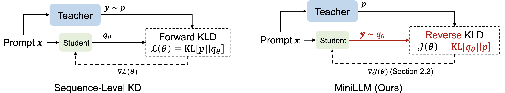
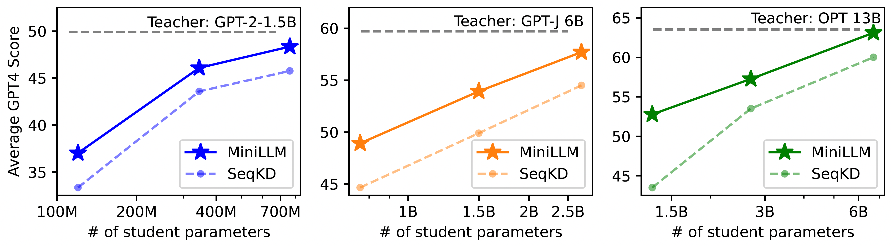

0. 这一篇讲什么
第 1 篇讲了 OPD 的定义和理论根：DAgger 的"在学生自己的状态上重新查询专家"，以及 forward / reverse KL。这一篇讲 2020 到 2025 年间把这些想法变成具体算法的几篇论文。它们在今天的 OPD 工作里几乎都会被引用，而且后来很多"新"做法其实在这些论文里已经出现过。
按时间顺序：
| 年份 | 工作 | 一句话贡献 |
|---|---|---|
| 2020 | ImitKD（Lin et al., EMNLP 2020） | 第一个把 DAgger 用到自回归模型蒸馏上 |
| 2023 | f-DISTILL（Wen et al., ACL 2023） | 把序列级蒸馏统一到 f 散度框架下，比较不同散度 |
| 2023/24 | GKD（Agarwal et al., ICLR 2024） | 把"数据是否 on-policy"和"用什么散度"拆成两个独立超参数系统比较；提出 GKD+RL |
| 2023/24 | MiniLLM（Gu et al., ICLR 2024） | 坚持优化序列级 reverse KL，用策略梯度求解并处理它的高方差 |
| 2024 | DistiLLM（Ko et al., ICML 2024） | skew KL 让目标有界、梯度稳定；用回放缓冲区复用学生样本，降低在线采样成本 |
| 2024 | Speculative KD（Xu et al.） | 学生提议 token，teacher 替换不认可的 token，在两种分布之间插值 |
| 2025 | DistiLLM-2（Ko et al., ICML 2025） | 对 teacher 回答和学生回答使用不同方向的损失，形成对比式目标 |
这些工作的共同问题是：student 在自己的样本上学习时，(1) 每个位置用什么散度，(2) 梯度要不要考虑"现在的选择会改变未来的前缀"，(3) 学生样本太差或太贵时怎么办。 下面逐篇看它们各自的回答。
1. ImitKD：把 DAgger 搬到序列蒸馏
Lin et al.（2020, Autoregressive Knowledge Distillation through Imitation Learning）是最早明确把自回归蒸馏表述为模仿学习问题的工作。它的出发点和第 1 篇第 2 节完全相同：词级蒸馏和 SeqKD 都只在 teacher 或数据的前缀上训练，student 推理时遇到自己的前缀就会出现 exposure bias。
它的做法直接对应 DAgger：
- teacher 当作 oracle：在任意前缀上，teacher 的下一 token 分布就是"专家动作"。
- 前缀来自混合分布：训练序列按一个调度在固定数据集和 student 自己的生成之间混合，类似 DAgger 里在专家策略和学习者策略之间混合。
- 监督在 student 前缀上重新查询 teacher：不是沿用原数据的下一个 token，而是问 teacher 在这个新前缀下的分布。
摘要报告，用 ImitKD 训练的 student 比从头训练的 student 高 1.4 到 4.8 个 BLEU/ROUGE 点，并且稳定优于 SeqKD 等蒸馏方法，当时的模型规模还很小。GKD 论文后来把 ImitKD 归为自己的特例："ImitKD can be viewed as GKD with forward KL and a non-increasing schedule on $\lambda$"，并指出 ImitKD 没有尝试完全 on-policy 的数据，也没有结合 RL。ImitKD 的意义在于方法论：on-policy 蒸馏不是 LLM 时代才有的想法，它就是 DAgger 在序列生成上的实例。
2. f-DISTILL：散度的选择
Wen et al.（2023, f-Divergence Minimization for Sequence-Level Knowledge Distillation）提出 f-DISTILL 框架，把序列级蒸馏写成最小化 teacher 和 student 序列分布之间的某个 f 散度，并把它分解成逐步的损失，使其可以在 token 级计算。框架覆盖 forward KL、reverse KL、Jensen–Shannon 和总变差距离（TVD）等。
它的主要经验结论是：对称的散度（JS、TVD）总体上比单向的 KL 更好，因为它们同时惩罚"漏掉 teacher 的模式"和"跑到 teacher 不认可的地方"。这里采样方式和散度绑定得很清楚：forward KL 用 teacher 样本估计，reverse KL 用 student 样本估计，JS 和 TVD 两种样本都要用；为了省成本，teacher 样本离线生成一次后固定，student 样本在线采。这正是第 1 篇 4.4 节"序列级散度决定前缀来源"的直接体现。这为后面 GKD 用广义 JSD、DistiLLM 用 skew KL 提供了动机：纯 forward KL 和纯 reverse KL 都不是唯一合理的选择。
3. GKD：把两个选择拆开
3.1 目标函数
GKD（Generalized Knowledge Distillation; Agarwal et al., On-Policy Distillation of Language Models: Learning from Self-Generated Mistakes, ICLR 2024）是今天"on-policy distillation"这个名字的直接来源。它的贡献在于把蒸馏的设计空间拆成两个正交的维度，并做了系统实验。
维度一：前缀从哪里来。 用 $\lambda \in [0,1]$ 表示 on-policy 数据的比例。论文的算法 1 每一步抽 $u \sim U(0,1)$：若 $u \le \lambda$，这一批的输出由 student 当场生成；否则来自固定数据集（人工标注或 teacher 生成）。$\lambda = 0$ 是普通的监督式蒸馏，$\lambda = 1$ 是完全 on-policy。
维度二：每个位置用什么散度。 论文定义了 token 级的序列散度
$$ \mathcal{D}(p_T \,\|\, p_S^\theta)(y \mid x) = \frac{1}{L_y} \sum_{n=1}^{L_y} \mathcal{D}\big(p_T(\cdot \mid y_{<n}, x) \,\|\, p_S^\theta(\cdot \mid y_{<n}, x)\big) $$
其中 $\mathcal{D}$ 可以是 forward KL、reverse KL，或者论文使用的广义 Jensen–Shannon 散度
$$ \mathcal{D}_{\mathrm{JSD}(\beta)}(P \,\|\, Q) = \beta\, D_{\mathrm{KL}}\big(P \,\|\, \beta P + (1-\beta) Q\big) + (1-\beta)\, D_{\mathrm{KL}}\big(Q \,\|\, \beta P + (1-\beta) Q\big), \quad 0 < \beta < 1 $$
$\beta$ 在 forward 和 reverse 之间插值：论文指出 $\beta \to 0$ 时它的梯度表现得像 forward KL，$\beta \to 1$ 时像 reverse KL。
合起来，GKD 的目标是
$$ \mathcal{L}_{\mathrm{GKD}}(\theta) = (1-\lambda)\, \mathbb{E}_{(x,y) \sim (X,Y)}\big[\mathcal{D}(p_T \,\|\, p_S^\theta)(y\mid x)\big] + \lambda\, \mathbb{E}_{x \sim X}\, \mathbb{E}_{y \sim p_S(\cdot\mid x)}\big[\mathcal{D}(p_T \,\|\, p_S^\theta)(y\mid x)\big] $$
注意第二项的期望是在学生分布下取的，但梯度不通过学生的采样分布反传。原文写道："we do not backpropagate through the student's sampling distribution $p_S(\cdot \mid x)$, similar to on-policy imitation"，并说明这样做"makes the training stable and computationally efficient"。用第 1 篇第 5 节的语言说，这是 $\gamma = 0$ 的版本：把前缀当作给定的状态，只优化每个状态上的分布匹配。
下面检查广义 JSD 的两个极限，以及它和两个方向 KL 的关系：
import numpy as np
rng = np.random.default_rng(1)
def kl(p, q): return np.sum(p*np.log(p/q))
def jsd_beta(pT, pS, beta): # GKD Eq.1: D_JSD(beta)(P_T || P_S)
m = beta*pT + (1-beta)*pS
return beta*kl(pT, m) + (1-beta)*kl(pS, m)
def skl(p, q, a): return kl(p, a*p + (1-a)*q) # DistiLLM skew KL
def srkl(p, q, a): return kl(q, (1-a)*p + a*q) # skew reverse KL
pT = rng.dirichlet(np.ones(6)*0.5); pS = rng.dirichlet(np.ones(6)*0.5)
print("forward KL(T||S) = %.4f reverse KL(S||T) = %.4f" % (kl(pT, pS), kl(pS, pT)))
for b in [1e-4, 0.1, 0.5, 0.9, 1-1e-4]:
j = jsd_beta(pT, pS, b)
print(f"beta={b:<7g} JSD={j:.5f} JSD/beta={j/b:.4f} JSD/(1-beta)={j/(1-b):.4f}")
# student puts (almost) zero mass where the teacher has mass: forward KL explodes, skew KL stays bounded
pS0 = pS.copy(); pS0[np.argmax(pT)] = 1e-12; pS0 /= pS0.sum()
print("\nstudent misses teacher's top token:")
print(" forward KL = %.2f, SKL(a=0.1) = %.3f (bound log(1/a) = %.3f)" % (kl(pT, pS0), skl(pT, pS0, .1), np.log(10)))
输出：
forward KL(T||S) = 2.4397 reverse KL(S||T) = 5.9641
beta=0.0001 JSD=0.00024 JSD/beta=2.4388 JSD/(1-beta)=0.0002
beta=0.1 JSD=0.18886 JSD/beta=1.8886 JSD/(1-beta)=0.2098
beta=0.5 JSD=0.48459 JSD/beta=0.9692 JSD/(1-beta)=0.9692
beta=0.9 JSD=0.24403 JSD/beta=0.2711 JSD/(1-beta)=2.4403
beta=0.9999 JSD=0.00059 JSD/beta=0.0006 JSD/(1-beta)=5.8913
student misses teacher's top token:
forward KL = 13.86, SKL(a=0.1) = 1.659 (bound log(1/a) = 2.303)
$\beta \to 0$ 时 $\mathrm{JSD}(\beta)/\beta$ 趋于 forward KL（2.4388 对 2.4397），$\beta \to 1$ 时 $\mathrm{JSD}(\beta)/(1-\beta)$ 趋于 reverse KL（5.8913 对 5.9641）。可以从定义直接推出来：$\beta\to0$ 时混合分布 $M \to Q$，第一项趋于 $\beta\, D_{\mathrm{KL}}(P\|Q)$，第二项是 $O(\beta^2)$；$\beta \to 1$ 时对称。所以 $\beta$ 不只是插值方向，还改变了损失的整体尺度，调 $\beta$ 时学习率也要跟着看。最后两行的 skew KL 留到第 5 节讲。
3.2 实验设置与结论
GKD 的实验规模在今天看比较小，但设计很系统：
- 模型：student 是 T5-small（77M）、T5-base（250M）、T5-large（800M），teacher 是监督微调后的 T5-XL（约 3B）。
- 任务：XSum 摘要、WMT14 英译德、GSM8K 算术推理（student 从 Flan-T5 初始化，teacher 是微调后的 FLAN T5-XL，测试准确率 27.9），以及任务无关的指令微调。
- 主要结果：在不同 student 规模上取平均，on-policy GKD 相对初始 student 的提升分别是摘要 2.1 倍、翻译 1.7 倍、算术推理 1.9 倍（论文引言给出的相对增益）；指令微调设置下 BBH 提升 2%、MMLU 提升 1%（绝对值）。
论文给出的结论可以归纳为三条：
- on-policy 数据几乎总是有帮助。 原文："On-policy and mixed variants consistently outperform supervised variants."。GSM8K 上只要至少 25% 的数据是 on-policy，提高学生样本比例就持续改善结果。
- 最优散度依赖任务和解码方式。 论文原话是"the optimal divergence seems to be task-dependent"：WMT 上广义 JSD 最好（student 越大差距越小），GSM8K 上 forward KL 表现不错，指令微调上 reverse KL 优于 forward KL。解码方式也有影响：XSum 上用温度采样评估时 mode-seeking 的散度更好，而贪心解码下散度的选择影响不大；降低温度会同时减小多样性和不同散度之间的差距。
- 蒸馏可以和 RL 组合。 论文 3.2 节提出把蒸馏项作为 RL 的正则：
$$ \max_\theta\ (1-\alpha)\, \mathbb{E}_{x,\, y \sim p_S^\theta}\big[r(y)\big] - \alpha\, \mathbb{E}_{x,\, y\sim p_S}\big[\mathcal{D}(p_T \,\|\, p_S^\theta)(y\mid x)\big] $$
$\alpha = 1$ 是纯蒸馏，$\alpha = 0$ 是纯 RL。论文用 RLAIF 奖励做了演示。这个形式在 2025 年后变成了工业界的标准做法：MiMo-V2-Flash 的多教师 OPD 在 teacher 的 token 级优势之外再加一个 outcome reward 的优势（第 3 篇），KDRL 等工作把 reverse KL 蒸馏和 GRPO 合并成一个目标（第 5 篇）。
3.3 GKD 留下的问题
GKD 实验里 teacher 和 student 是同一家族、同一个词表，任务输出也短。它没有回答两个后来变得很重要的问题：长思维链下 teacher 在学生前缀上是否仍然可靠（第 4、6 篇），以及 teacher 换成 RL 训练出的推理模型、student 已经很强时，OPD 是否还成立（第 3 篇）。
4. MiniLLM：坚持序列级 reverse KL
4.1 动机
MiniLLM（Gu et al., MiniLLM: Knowledge Distillation of Large Language Models, ICLR 2024；arXiv 的 2026 年版本改名为 MiniLLM: On-Policy Distillation of Large Language Models）与 GKD 几乎同时出现，出发点却更偏向散度的选择。论文认为：对开放式生成任务，小模型容量远小于大模型，forward KL 会迫使 student 给 teacher 的所有低概率区域都分配概率，结果在这些区域生成不合理的内容；reverse KL 只要求 student 在自己去的地方被 teacher 认可，更适合"能力不够时少说错话"。

4.2 策略梯度形式
MiniLLM 直接优化序列级 reverse KL $\mathcal{J}(\theta) = \mathrm{KL}[q_\theta \,\|\, p]$，其中 $q_\theta$ 是 student，$p$ 是 teacher。和第 1 篇第 5 节推出的一样，它的梯度可以写成策略梯度的形式，每一步的"奖励"是 $\log \frac{p(y_t\mid y_{<t},x)}{q_\theta(y_t \mid y_{<t},x)}$，并且把未来所有步的奖励累加起来：
$$ \nabla_\theta \mathcal{J}(\theta) = -\mathbb{E}_{y \sim q_\theta}\left[\sum_{t=1}^{T} (R_t - 1)\, \nabla_\theta \log q_\theta(y_t \mid y_{<t}, x)\right], \qquad R_t = \sum_{t'=t}^{T} \log \frac{p(y_{t'} \mid y_{<t'}, x)}{q_\theta(y_{t'} \mid y_{<t'}, x)} $$
这是它和 GKD 最本质的区别：MiniLLM 保留了"当前选择会把 student 带到什么样的未来前缀"这一项，GKD 丢掉了。直接这样做方差很大，并且容易出现奖励被钻空子的问题，所以论文加了三个技巧。
技巧一：单步分解（single-step decomposition）。 把 $R_t$ 拆成当前步的奖励 $r_t$ 和未来的累计奖励 $R_{t+1}$。当前步的那一项不用采样，而是在整个词表上精确求期望：
$$ \nabla \mathcal{J} = \underbrace{-\mathbb{E}\Big[\sum_t \nabla\, \mathbb{E}_{y_t \sim q_\theta(t)}[r_t]\Big]}_{\text{单步项：对词表精确计算}} \ \underbrace{-\ \mathbb{E}\Big[\sum_t R_{t+1}\, \nabla \log q_\theta(y_t\mid y_{<t},x)\Big]}_{\text{长期项：策略梯度估计}} $$
单步项的精确计算等价于在每个前缀上算一次完整的 token 级 reverse KL 梯度。这也说明 GKD 风格的做法就是 MiniLLM 去掉长期项后的特例。
技巧二：teacher 混合采样（teacher-mixed sampling）。 采样时用 $\tilde p = \alpha\, p + (1-\alpha)\, q_\theta$（论文取 $\alpha = 0.2$），再用重要性权重修正。目的是防止 student 在训练早期生成退化文本（比如重复）并从中"骗"到奖励。
技巧三：长度归一化。 reverse KL 的累计奖励对短回答更有利（项数少，累计惩罚少），student 会学会过早结束。论文把未来奖励按剩余长度取平均来消除这个偏差。这个问题在 2026 年以另一种形式重新出现：长思维链 OPD 里的"长度膨胀"和"长度钻空子"（第 4 篇）。
下面用一个两步、词表大小为 8 的例子验证单步分解是无偏的，并且减小了方差：
import numpy as np, itertools
rng = np.random.default_rng(0)
V = 8
def softmax(z): e = np.exp(z - z.max()); return e/e.sum()
z1 = rng.normal(size=V); Z2 = rng.normal(size=(V, V)) # student logits
t1 = softmax(rng.normal(size=V)*2); T2 = np.array([softmax(rng.normal(size=V)*2) for _ in range(V)])
p1 = softmax(z1); P2 = np.array([softmax(r) for r in Z2])
def seq_kl(z1):
q1 = softmax(z1)
return sum(q1[a]*P2[a, b]*np.log(q1[a]*P2[a, b]/(t1[a]*T2[a, b])) for a, b in itertools.product(range(V), range(V)))
h = 1e-6; g_true = np.array([(seq_kl(z1+h*e) - seq_kl(z1-h*e))/(2*h) for e in np.eye(V)])
def kl_row(a): return np.sum(P2[a]*np.log(P2[a]/T2[a])) # step-2 KL given y1=a
J1 = np.diag(p1) - np.outer(p1, p1)
single_exact = J1 @ (np.log(p1/t1) + 1) # d/dz1 of KL at step 1, summed over vocab
N = 20000
naive, decomp = [], []
for _ in range(N):
a = rng.choice(V, p=p1); b = rng.choice(V, p=P2[a])
r1 = np.log(p1[a]/t1[a]); r2 = np.log(P2[a, b]/T2[a, b])
score = np.eye(V)[a] - p1
naive.append(score*(r1 + r2)) # REINFORCE on the whole return
decomp.append(single_exact + score*r2) # exact single-step term + PG on future term
naive, decomp = np.array(naive), np.array(decomp)
print("true grad (first 4) :", np.round(g_true[:4], 3))
print("naive mean (first 4) :", np.round(naive.mean(0)[:4], 3))
print("decomp mean (first 4):", np.round(decomp.mean(0)[:4], 3))
print("per-sample variance, summed over logits: naive %.3f decomposed %.3f" % (naive.var(0).sum(), decomp.var(0).sum()))
输出：
true grad (first 4) : [-0.121 0.135 -0.425 0.255]
naive mean (first 4) : [-0.118 0.121 -0.423 0.243]
decomp mean (first 4): [-0.117 0.13 -0.426 0.256]
per-sample variance, summed over logits: naive 13.315 decomposed 5.496
两种估计都是无偏的（均值都接近数值微分得到的真梯度），单步分解把单样本方差从 13.3 降到 5.5。剩下的方差全部来自长期项。这也解释了为什么后来的工业实现干脆丢掉长期项（$\gamma = 0$）：长期项是方差的主要来源，而丢掉它不改变不动点（第 1 篇第 5 节）。
4.3 实验与结论
MiniLLM 的 student 覆盖 120M 到 13B：GPT-2 120M / 340M / 760M（teacher GPT-2 1.5B），OPT 1.3B / 2.7B / 6.7B（teacher OPT-13B），LLaMA-7B（teacher LLaMA-13B）。在指令跟随数据上评估 Rouge-L 和 GPT-4 打分。例如 LLaMA-7B 在 DollyEval 上 GPT-4 分数 76.4，不用蒸馏的 SFT 是 73.0，Rouge-L 是 29.0 对 26.3。论文还报告了 MiniLLM 的 exposure bias 更低、校准更好（SST2 上 ECE 0.099，词级 KD 是 0.191）、长文本生成更好。

一个值得注意的历史细节：MiniLLM 的官方仓库后来加了一段说明，指出 Thinking Machines 在 2025 年把"用 on-policy 蒸馏最小化 reverse KL"推广开来，这正是 MiniLLM 的方法；论文的 arXiv 版本也在 2026 年改名为"On-Policy Distillation of Large Language Models"。
5. DistiLLM 与 DistiLLM-2：稳定性与效率
5.1 skew KL
DistiLLM（Ko et al., DistiLLM: Towards Streamlined Distillation for Large Language Models, ICML 2024）关注两个实际问题：KL 损失在 student 给某些 token 极小概率时数值上会爆炸，梯度不稳定；在线采样学生样本太慢。
对第一个问题，它提出 skew KL：
$$ D_{\mathrm{SKL}}^{(\alpha)}(p, q_\theta) = D_{\mathrm{KL}}\big(p \,\|\, \alpha p + (1-\alpha) q_\theta\big), \qquad D_{\mathrm{SRKL}}^{(\alpha)}(p, q_\theta) = D_{\mathrm{KL}}\big(q_\theta \,\|\, (1-\alpha)p + \alpha q_\theta\big) $$
把对方分布混进来一部分 $\alpha$ 之后，分母不会接近零，所以 $D_{\mathrm{SKL}} \le \log(1/\alpha)$ 有界。3.1 节代码的最后一行验证了这一点：student 在 teacher 概率最大的 token 上几乎给 0 时，forward KL 是 13.86，$\alpha = 0.1$ 的 skew KL 只有 1.66，低于上界 $\log 10 = 2.30$。论文还从理论上分析了 skew KL 的梯度更稳定、经验估计误差更小。
注意 skew KL 的形式和 GKD 的 JSD 很像（都用了混合分布），区别在于 JSD 是两项的加权和，skew KL 只有一项。
5.2 自适应 off-policy
对第二个问题，DistiLLM 把学生生成的样本放进一个回放缓冲区，训练时以概率 $\phi$ 从缓冲区取样本（而不是每次都在线生成）；$\phi$ 根据验证集损失自适应调整：验证损失上升时增加学生样本的比例。这样大部分时候复用旧的学生样本，减少在线生成的次数。严格说，缓冲区里的样本来自旧策略，所以这不是完全 on-policy，而是介于两者之间。论文报告相对其他 KD 方法有最高 4.3 倍的训练加速（引言给出的范围是 2.5 到 4.3 倍）。
这个思路后来在 2026 年的降本工作里反复出现：缓存 teacher 打分、只在初始学生样本上算一次 teacher log-prob 等（第 8 篇）。
5.3 DistiLLM-2：对比式目标
DistiLLM-2（Ko et al., DistiLLM-2: A Contrastive Approach Boosts the Distillation of LLMs, ICML 2025 oral）进一步观察到：teacher 的回答和 student 的回答适合用不同方向的损失。它对 teacher 回答使用 SKL，提高 student 在 teacher 回答上的似然；对 student 自己的回答使用 SRKL，降低 student 在 teacher 不认可的那部分回答上的似然。两者组合成一个类似偏好优化的对比式目标。论文在指令跟随、数学、代码上做了实验，并扩展到偏好对齐和视觉语言模型。
这个设计说明了一点：teacher 样本和 student 样本携带的是不同的信息。 teacher 样本告诉 student 哪里是好的区域，student 样本暴露 student 自己的错误。纯 OPD 只用后者，纯 SFT 只用前者。Qwen3 的"先 off-policy、后 on-policy"（第 3 篇）可以看作把两者按时间顺序安排，而 DistiLLM-2 是在同一个目标里同时使用。
6. Speculative KD：在两个分布之间插值
Xu et al.（2024, Speculative Knowledge Distillation: Bridging the Teacher-Student Gap Through Interleaved Sampling，作者包括 GKD 的 Rishabh Agarwal）从另一个角度处理"学生样本太差"的问题。它借鉴了推测解码：student 逐 token 提议，teacher 检查每个提议的 token；如果某个 token 不在 teacher 的 top-K 候选里，就用 teacher 采样的 token 替换。这样得到的序列大部分是 student 的，但在 student 明显出错的地方被 teacher 纠正。
它和 MiniLLM 的 teacher 混合采样目的相同：在训练早期 student 很弱时，纯 on-policy 样本质量太差，teacher 在这些前缀上的监督价值也低。 把 teacher 的 token 混进前缀，相当于在 on-policy 和 off-policy 之间自适应插值。代价是前缀不再完全是 student 自己会走的路，第 1 篇讲的 exposure bias 修复效果会打折扣。
7. 小结：这几篇论文各自确立了什么
| 工作 | 前缀来源 | 每个位置的散度 | 梯度含未来项 | 如何处理学生样本差或采样贵 |
|---|---|---|---|---|
| ImitKD | 数据与学生按调度混合 | forward KL（teacher 分布上的交叉熵） | 否 | 混合比例调度 |
| f-DISTILL | teacher 与学生样本 | f 散度（JS、TVD 等） | 否 | 两种样本一起用 |
| GKD | 以概率 $\lambda$ 用学生样本 | forward / reverse KL 或 JSD($\beta$) | 否（明确不对采样反传） | 调 $\lambda$ |
| MiniLLM | 学生（混入 20% teacher） | 序列级 reverse KL | 是（策略梯度 + 单步分解） | teacher 混合采样、长度归一化 |
| DistiLLM | 回放缓冲区中的学生样本 + 固定数据 | skew KL / skew reverse KL | 否 | 自适应 off-policy 复用 |
| DistiLLM-2 | teacher 样本与学生样本分开 | 对 teacher 样本用 SKL，对学生样本用 SRKL | 否 | 对比式目标 |
| Speculative KD | 学生提议、teacher 替换 | token 级散度 | 否 | 交错采样 |
从严格的学术角度看，这些论文已经确立了以下几点，后来的工作多是在新场景下重新验证或改进它们：
- 在学生自己的前缀上监督普遍优于只在固定前缀上监督（ImitKD、GKD、MiniLLM 一致）。
- 散度方向没有普适最优，取决于任务、解码方式和容量差距（f-DISTILL、GKD；第 1 篇讲的 AKL 也属于这一结论）。
- 只优化当前步（$\gamma=0$）比带未来项的完整策略梯度更稳定、更省，代价是梯度有偏但不动点不变（GKD 的做法；MiniLLM 的单步分解也说明当前步是信号的主体）。
- 纯 on-policy 在 student 很弱时效率低，需要 teacher 样本或 teacher token 的介入（MiniLLM 的混合采样、DistiLLM 的回放、Speculative KD、DistiLLM-2）。
- 蒸馏可以作为 RL 的稠密正则或替代（GKD+RL）。
这些论文没有覆盖的是规模：它们的 student 最多十几 B，任务以短文本生成为主，teacher 是同家族的 SFT 模型。2025 年开始，OPD 进入了一个不同的设定：teacher 是用 RL 训练出来的长思维链推理模型，student 已经过大规模 SFT，序列长度达到数万 token。下一篇讲工业界如何在这个设定下使用 OPD，以及它和 RL 相比到底省了多少。
参考文献
- Lin et al. Autoregressive Knowledge Distillation through Imitation Learning. EMNLP 2020. arXiv:2009.07253.
- Wen et al. f-Divergence Minimization for Sequence-Level Knowledge Distillation. ACL 2023. arXiv:2307.15190.
- Agarwal et al. On-Policy Distillation of Language Models: Learning from Self-Generated Mistakes. ICLR 2024. arXiv:2306.13649.
- Gu et al. MiniLLM: Knowledge Distillation of Large Language Models. ICLR 2024. arXiv:2306.08543.（2026 年 arXiv 版更名为 MiniLLM: On-Policy Distillation of Large Language Models）
- Ko et al. DistiLLM: Towards Streamlined Distillation for Large Language Models. ICML 2024. arXiv:2402.03898.
- Ko et al. DistiLLM-2: A Contrastive Approach Boosts the Distillation of LLMs. ICML 2025. arXiv:2503.07067.
- Xu et al. Speculative Knowledge Distillation: Bridging the Teacher-Student Gap Through Interleaved Sampling. 2024. arXiv:2410.11325.
- Wu et al. Rethinking Kullback-Leibler Divergence in Knowledge Distillation for Large Language Models. COLING 2025. arXiv:2404.02657.
- Ross, Gordon & Bagnell. A Reduction of Imitation Learning and Structured Prediction to No-Regret Online Learning. AISTATS 2011.